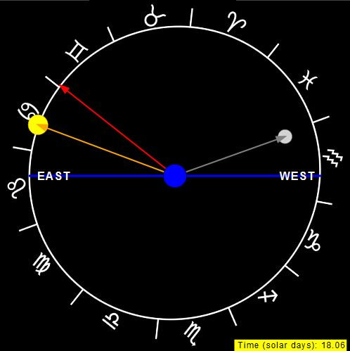

Naked Eye Astronomy: Sidereal vs. Solar Days
General Description
This simulation illustrates the difference between the sidereal and solar day. This simulation shows the view from the Earth as one would observe in the sky. The sidereal day is the day according to the stars. It is the time it takes for a particular star to rotate around the Earth (from the Earth's perspetive) and end up in the same part of the sky as it started. On Earth, this time is 23 hours and 56 minutes. The unit of time called a solar day is the time it takes for the Sun to get back to the same place in the sky as it was before. On Earth, this time is 24 hours.
This simulation shows the difference between the sidereal and solar day by showing the motion of the stars (the zodiacal symbols) and the sun (orange). It uses an orange arrow to represent where Sun would be seen in the sky relative to the background stars. A particular star is denoted by a red arrow. Users canalso add a visual of the Moon to see the difference between the sidereal month and the synodic month.
Orbit Frame
- Options
- Show Moon: shows the Moon's motion in the sky.
- Controls
- Play/pause: play or pause the simulation.
- Step: advance the simulation by one time step.
- Reset: reset the simulations to its initial state.
- Speed Up (x10): speeds up the simulation (useful to see monthy lunar motion with respect to the stars).
- Speed Up (x100): speeds up the simulation (useful to see yearly solar motion with respect to the stars).
- Original Spped: slows down the simulation to the orignal rotation rate.
- Visual Elements
- Blue disk: Earth.
- Orange disk: Sun.
- Gray disk: Moon.
- Red arrow: a reference star line of sight from Earth.
- Orange arrow: line of sight vector showing where Sun appears against the background stars as seen from Earth.
- Gray arrow: line of sight vector showing where Moon appears against the background stars as seen from Earth.
- Zodiac symbols: symbols show the locations of the zodiacal constellations as seen from Sun.
Mario Belloni (mabelloni@davidson.edu)
Todd K. Timberlake (ttimberlake@berry.edu)